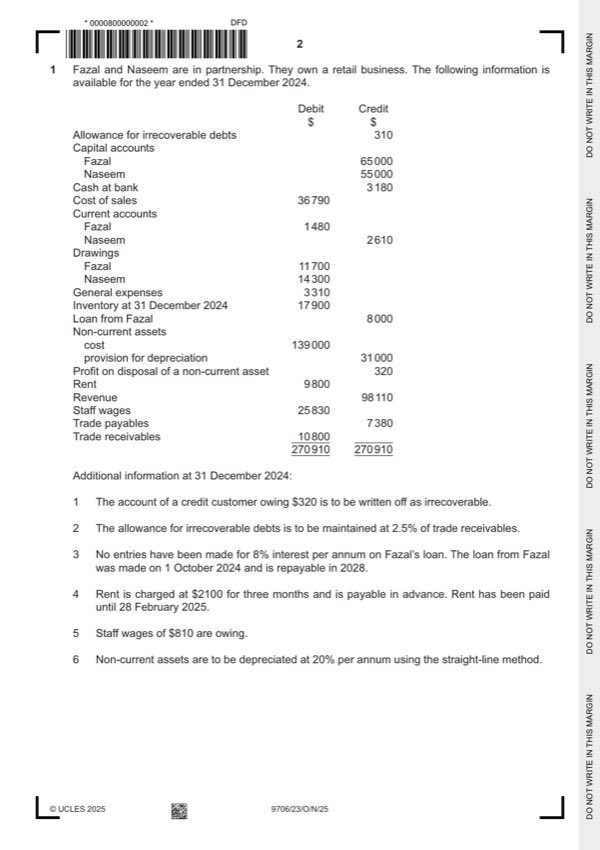

Question 1

Original paper page 2
Part 1(a) — solution
Answer: 368
Prepare the statement of profit or loss for the year ended 31 December 2024. 9
Fazal and Naseem
Statement of profit or loss for the year ended 31 December 2024
$ $
Revenue 98 110
Cost of sales (36 790)
Gross profit 61 320 (1)
Other income
Profit on disposal of non-current assets 320 (1)
Decrease in allowance for irrecoverable 48 (1)
debts W1
368
Mark points
- Correct result: 368
Part 1(b) — solution
Prepare each partner’s current account for the year ended 31 December 2024. 5
Dates are not required.
Current accounts
Fazal Naseem Fazal Naseem
$ $ $ $
Balance 1 480 Balance 2 610
b/d b/d
Interest 585 715 (1) Salary 8 000 (1)
on
drawings
Drawings 11 700 14 300 Interest 160 (1)OF
on loan
Residual 5 821 5 821 (1)OF Balances 19 426 10 226
loss (loss c/d
share)
Mark points
- Include the ideas shown in the solution above.
Part 1(c) — solution
Prepare the equity and liabilities section of the partnership’s statement of 5
financial position at 31 December 2024.
Fazal and Naseem
Statement of financial position at 31 December 2024
$ $ $
Equity and liabilities
Equity
Fazal Naseem
Capital accounts 65 000 55 000 120 000 (1)
Current accounts (19 426) (10 226) (29 652)
Total Equity 90 348 (1) OF
Non-current liability
Loan from Fazal 8 000 (1)
Current liabilities
Trade payables 7 380
Bank overdraft 3 180
Other payables 810
Mark points
- Include the ideas shown in the solution above.
Part 1(d)(i) — solution
- New gross profit 70% $98 110 = 68 677 (1)
- Increase: $68 677 – $61 320 = $7357 (1)
Mark points
- New gross profit 70% $98 110 = 68 677 (1)
- Increase: $68 677 – $61 320 = $7357 (1)
Part 1(d)(ii) — solution
- Increase in gross profit $61 320 17.5% = $10 731
- $10 731 less increase in rent $1260 (1) = $9471(1)
Mark points
- Increase in gross profit $61 320 17.5% = $10 731
- $10 731 less increase in rent $1260 (1) = $9471(1)
Part 1(e) — solution
Advise the partners which option they should choose. Justify your choice by 7
discussing both the advantages and disadvantages of each option.
Option A (Max 4)
Produces an increase in profit/partnership will be profitable (1)
Will new supplier prove reliable? (1)
Will quality of goods be maintained? (1)
Will bulk ordering result in less frequent deliveries and possible inventory
deterioration (1)
Will additional storage be required (1)
Will the expected increase in gross profit margin prove accurate? (1)
Option B (Max 4)
Produces the largest increase in profit (1)OF
Will forecasts of increased demand prove accurate? (1)
What are the costs of changing location? (1)
Will current regular customers continue to buy? (1)
Accept other valid responses
Decision supported with a comment (1)
Mark points
- Include the ideas shown in the solution above.
Part 1 — solution
Consistency (1) The same policy should be used from year to year
to ensure valid comparisons of results can be
made. (1)
Mark points
- Include the ideas shown in the solution above.
Part 1 — solution
- W1 Dividend: 7.5% $720 000 = 54 000 (1)
Mark points
- W1 Dividend: 7.5% $720 000 = 54 000 (1)